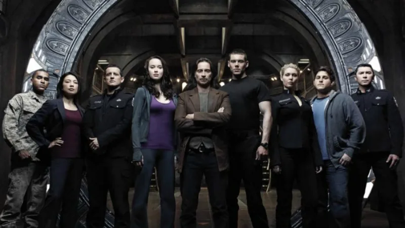

The final series that came on was about the ninith and final Cheveron which took them several billion light years from earth on a journey to find the meaning of the Galaxy and the beginning of it all. Sadly this television series never made it to far and i would like to see it trevived but that is probably never going to happen unless somone like Jeff Bezos spends a butt load of money to bring it back.